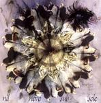

| Artist: | Nil |
| Title: | Novo Sub Sole |
| Label: | Unicorn Digital Inc. UNCR-5021 |
| Length(s): | 61 minutes |
| Year(s) of release: | 2005 |
| Month of review: | [12/2005] |
| 1) | Le Gardien | 20.11 |
| 2) | Linceul | 3.58 |
| 3) | Dégénération | 14.32 |
| 4) | 198 | 8.40 |
| 5) | Abandon | 8.09 |
| 6) | Dérives | 6.04 |
Linceul is a much more intimate song. The vocals of Berthet are now serene, building something of a church like atmosphere. Vocal melodies are not so outspoken here, melodies were also not the strong point of the previous track in fact, much of the guitar work was not very melodic in style.
With Dégénération we come to the second epic of this cd. There is a brooding tension here, with the clock ticking, the guitars setting in, raising the stakes a bit more. The band is out to scare people. The organ presence lends a sinister atmosphere to the wayward guitar play. This is indeed a promising beginning. After two minutes or so we arrive in gentler waters, with a Fender Rhodes gurgling in the back, and the drums light and gentle. When the guitars set back in, the Anekdoten reference is complete (and via that to King Crimson). Some more ethereal vocals come in next followed by a percussive passage with mellotron. The more up-beat passage that we arrive at around the eleven minute mark is quite a change. This sounds very unlike the band. We end with keyboards.
Given the title 198, one may wonder what it is about. It is quite a bit heavier than the forgoing tracks, with the guitars moving to a progmetal style. A bit like King Crimson, Red era going progmetal. As to what it is about: maybe nothing in particular as there do not happen to be any vocals.
They do return on Abandon, where the vocals are somewhat classically styled. The vocal melodies are not the strong point, they do not stick, they seem merely a vehicle for the voice. The vocoded spoken parts are more useful in that respect. In between we hear mellotron, a modern drum sound (the drummer is one who sounds modern and sensitive to atmosphere right through the album). The guitar work more than once reminds of Anekdoten. Halfway, the vocals become more orchestral, and the guitars gain in melody and power, while the piano repeats its slightly disconcerting continously, and the bass/stick rumbles in the back. Then the vocals come back in grand form, loudly and resoundingly.
Dérives is the final song on this album. This is a quietly flowing tune, with plenty of acoustic guitar, repetitive, and the drums filling in much of the rest. A rather dreamy piece, but not as serene as you may be thinking now.